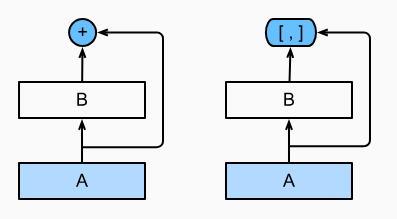
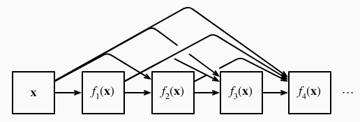
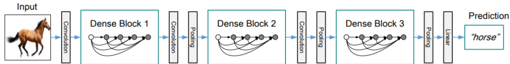
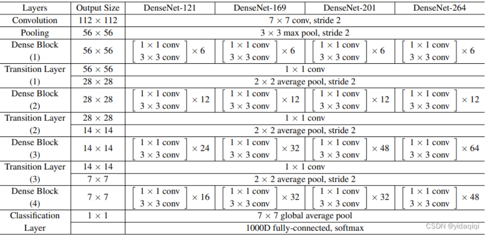

深度学习——稠密连接网络（DenseNet）原理讲解+代码（torch）-CSDN博客
稠密连接网络 （DenseNet ）在某种程度上是ResNet的逻辑扩展
任意函数的泰勒展开式（Taylor expansion），它把这个函数分解成越来越高阶的项。在x接近0时
f ( x ) = f ( 0 ) + f ′ ( 0 ) x + f ′ ′ ( 0 ) 2 ! x 2 + f ′ ′ ′ ( 0 ) 3 ! x 3 + … . f(x) = f(0) + f'(0) x + \frac{f''(0)}{2!} x^2 + \frac{f'''(0)}{3!} x^3 + \ldots.
f ( x ) = f ( 0 ) + f ′ ( 0 ) x + 2 ! f ′ ′ ( 0 ) x 2 + 3 ! f ′ ′ ′ ( 0 ) x 3 + … .
ResNet将f分解为两部分：一个简单的线性项和一个复杂的非线性项。 如果想将f拓展成超过两部分的信息, 一种方案便是DenseNet

ResNet和DenseNet的关键区别在于，DenseNet输出是连接 （用图中的[,]表示）而不是如ResNet的简单相加 。 因此，在应用越来越复杂的函数序列后，我们执行从x到其展开式的映射：
x → [ x , f 1 ( x ) , f 2 ( [ x , f 1 ( x ) ] ) , f 3 ( [ x , f 1 ( x ) , f 2 ( [ x , f 1 ( x ) ] ) ] ) , … ] . \mathbf{x} \to \left[
\mathbf{x},
f_1(\mathbf{x}),
f_2([\mathbf{x}, f_1(\mathbf{x})]), f_3([\mathbf{x}, f_1(\mathbf{x}), f_2([\mathbf{x}, f_1(\mathbf{x})])]), \ldots\right].
x → [ x , f 1 ( x ) , f 2 ( [ x , f 1 ( x ) ] ) , f 3 ( [ x , f 1 ( x ) , f 2 ( [ x , f 1 ( x ) ] ) ] ) , … ] .
将这些展开式结合到多层感知机中，再次减少特征的数量。 实现起来非常简单：我们不需要添加术语，而是将它们连接起来。 DenseNet这个名字由变量之间的“稠密连接”而得来，最后一层与之前的所有层紧密相连

稠密网络主要由2部分构成：稠密块（dense block）和 过渡层（transition layer） 。 前者定义如何连接输入和输出，而后者则控制通道数量，使其不会太复杂。
在深度卷积神经网络中，通常存在梯度消失或梯度爆炸等问题，尤其是随着网络层数的增加，这种问题变得尤为严重，上篇讲到的残差网络引入了残差连接（跨层连接）来解决了这些问题，从而允许网络更深地训练，但是，ResNet中的跨层连接是通过相加的方式实现的，这意味着每一层只能直接访问前一层的输出。
DenseNet（密集卷积网络）的核心思想（创新之处）是密集连接，使得每一层都与所有之前的层直接连接，即某层的输入除了包含前一层的输出外还包含前面所有层的输出。
优点：
一个稠密块 由多个卷积块组成，每个卷积块使用相同数量的输出通道。 然而，在前向传播中，我们将每个卷积块的输入和输出在通道维上连结。
1 2 3 4 5 6 7 8 9 10 11 12 13 14 15 16 17 18 19 20 21 22 23 24 25 import torchfrom torch import nnfrom d2l import torch as d2ldef conv_block (input_channels, num_channels ): return nn.Sequential( nn.BatchNorm2d(input_channels), nn.ReLU(), nn.Conv2d(input_channels, num_channels, kernel_size=3 , padding=1 )) class DenseBlock (nn.Module): def __init__ (self, num_convs, input_channels, num_channels ): super (DenseBlock, self ).__init__() layer = [] for i in range (num_convs): layer.append(conv_block( num_channels * i + input_channels, num_channels)) self .net = nn.Sequential(*layer) def forward (self, X ): for blk in self .net: Y = blk(X) X = torch.cat((X, Y), dim=1 ) return X
由于每个稠密块都会带来通道数的增加，使用过多则会过于复杂化模型。 而过渡层可以用来控制模型复杂度。 它通过1×1卷积层来减小通道数，并使用步幅为2的平均汇聚层减半高和宽，从而进一步降低模型复杂度。
1 2 3 4 5 def transition_block (input_channels, num_channels ): return nn.Sequential( nn.BatchNorm2d(input_channels), nn.ReLU(), nn.Conv2d(input_channels, num_channels, kernel_size=1 ), nn.AvgPool2d(kernel_size=2 , stride=2 ))
DenseNet首先使用同ResNet一样的单卷积层和最大汇聚层。
1 2 3 4 5 b1 = nn.Sequential( nn.Conv2d(1 , 64 , kernel_size=7 , stride=2 , padding=3 ), nn.BatchNorm2d(64 ), nn.ReLU(), nn.MaxPool2d(kernel_size=3 , stride=2 , padding=1 ))
接下来，类似于ResNet使用的4个残差块，DenseNet使用的是4个稠密块。 与ResNet类似，我们可以设置每个稠密块使用多少个卷积层。 这里我们设成4，从而与 7.6节 的ResNet-18保持一致。 稠密块里的卷积层通道数（即增长率）设为32，所以每个稠密块将增加128个通道。
在每个模块之间，ResNet通过步幅为2的残差块减小高和宽，DenseNet则使用过渡层来减半高和宽，并减半通道数。
1 2 3 4 5 6 7 8 9 10 11 12 num_channels, growth_rate = 64 , 32 num_convs_in_dense_blocks = [4 , 4 , 4 , 4 ] blks = [] for i, num_convs in enumerate (num_convs_in_dense_blocks): blks.append(DenseBlock(num_convs, num_channels, growth_rate)) num_channels += num_convs * growth_rate if i != len (num_convs_in_dense_blocks) - 1 : blks.append(transition_block(num_channels, num_channels // 2 )) num_channels = num_channels // 2
最后接上全局汇聚层和全连接层来输出结果。
1 2 3 4 5 6 net = nn.Sequential( b1, *blks, nn.BatchNorm2d(num_channels), nn.ReLU(), nn.AdaptiveAvgPool2d((1 , 1 )), nn.Flatten(), nn.Linear(num_channels, 10 ))
1 2 3 4 5 6 7 8 9 10 11 12 13 14 15 16 17 def load_data_fashion_mnist (batch_size, resize=None ): """下载Fashion-MNIST数据集，然后将其加载到内存中""" trans = [transforms.ToTensor()] if resize: trans.insert(0 , transforms.Resize(resize)) trans = transforms.Compose(trans) mnist_train = torchvision.datasets.FashionMNIST( root="../data" , train=True , transform=trans, download=True ) mnist_test = torchvision.datasets.FashionMNIST( root="../data" , train=False , transform=trans, download=True ) return (data.DataLoader(mnist_train, batch_size, shuffle=True , num_workers=get_dataloader_workers()), data.DataLoader(mnist_test, batch_size, shuffle=False , num_workers=get_dataloader_workers())) batch_size = 256 train_iter, test_iter = load_data_fashion_mnist(batch_size=batch_size,resize=96 )
1 2 3 4 5 6 7 8 9 10 11 12 13 14 15 16 17 18 19 20 21 22 23 24 25 26 27 28 29 30 31 32 33 34 35 36 37 38 39 class Accumulator : """在n个变量上累加""" def __init__ (self, n ): self .data = [0.0 ] * n def add (self, *args ): self .data = [a + float (b) for a, b in zip (self .data, args)] def reset (self ): self .data = [0.0 ] * len (self .data) def __getitem__ (self, idx ): return self .data[idx] def accuracy (y_hat, y ): """计算预测正确的数量""" if len (y_hat.shape) > 1 and y_hat.shape[1 ] > 1 : y_hat = y_hat.argmax(axis=1 ) cmp = y_hat.type (y.dtype) == y return float (cmp.type (y.dtype).sum ()) def evaluate_accuracy_gpu (net, data_iter, device=None ): """使用GPU计算模型在数据集上的精度""" if isinstance (net, nn.Module): net.eval () if not device: device = next (iter (net.parameters())).device metric = Accumulator(2 ) with torch.no_grad(): for X, y in data_iter: if isinstance (X, list ): X = [x.to(device) for x in X] else : X = X.to(device) y = y.to(device) metric.add(accuracy(net(X), y), y.numel()) return metric[0 ] / metric[1 ]
1 2 3 4 5 6 7 8 9 10 11 12 13 14 15 16 17 18 19 20 21 22 23 24 25 26 27 28 29 30 31 32 33 34 35 36 37 38 39 class Animator : """在动画中绘制数据""" def __init__ (self, xlabel=None , ylabel=None , legend=None , xlim=None , ylim=None , xscale='linear' , yscale='linear' , fmts=('-' , 'm--' , 'g-.' , 'r:' 1 , ncols=1 , figsize=(3.5 , 2.5 ): if legend is None : legend = [] d2l.use_svg_display() self .fig, self .axes = d2l.plt.subplots(nrows, ncols, figsize=figsize) if nrows * ncols == 1 : self .axes = [self .axes, ] self .config_axes = lambda : d2l.set_axes( self .axes[0 ], xlabel, ylabel, xlim, ylim, xscale, yscale, legend) self .X, self .Y, self .fmts = None , None , fmts def add (self, x, y ): if not hasattr (y, "__len__" ): y = [y] n = len (y) if not hasattr (x, "__len__" ): x = [x] * n if not self .X: self .X = [[] for _ in range (n)] if not self .Y: self .Y = [[] for _ in range (n)] for i, (a, b) in enumerate (zip (x, y)): if a is not None and b is not None : self .X[i].append(a) self .Y[i].append(b) self .axes[0 ].cla() for x, y, fmt in zip (self .X, self .Y, self .fmts): self .axes[0 ].plot(x, y, fmt) self .config_axes() display.display(self .fig) display.clear_output(wait=True )
1 2 3 4 5 6 7 8 9 10 11 12 13 14 15 16 17 18 19 20 21 22 23 24 25 26 class Timer : """记录多次运行时间""" def __init__ (self ): self .times = [] self .start() def start (self ): """启动计时器""" self .tik = time.time() def stop (self ): """停止计时器并将时间记录在列表中""" self .times.append(time.time() - self .tik) return self .times[-1 ] def avg (self ): """返回平均时间""" return sum (self .times) / len (self .times) def sum (self ): """返回时间总和""" return sum (self .times) def cumsum (self ): """返回累计时间""" return np.array(self .times).cumsum().tolist()
1 2 3 4 5 6 7 8 9 10 11 12 13 14 15 16 17 18 19 20 21 22 23 24 25 26 27 28 29 30 31 32 33 34 35 36 37 38 39 40 41 42 43 44 45 46 47 def train_ch6 (net, train_iter, test_iter, num_epochs, lr, device ): """用GPU训练模型(在第六章定义)""" def init_weights (m ): if type (m) == nn.Linear or type (m) == nn.Conv2d: nn.init.xavier_uniform_(m.weight) net.apply(init_weights) print ('training on' , device) net.to(device) optimizer = torch.optim.SGD(net.parameters(), lr=lr) loss = nn.CrossEntropyLoss() animator = Animator(xlabel='epoch' , xlim=[1 , num_epochs], legend=['train loss' , 'train acc' , 'test acc' ]) timer, num_batches = Timer(), len (train_iter) for epoch in range (num_epochs): metric = Accumulator(3 ) net.train() for i, (X, y) in enumerate (train_iter): timer.start() optimizer.zero_grad() X, y = X.to(device), y.to(device) y_hat = net(X) l = loss(y_hat, y) l.backward() optimizer.step() with torch.no_grad(): metric.add(l * X.shape[0 ], d2l.accuracy(y_hat, y), X.shape[0 ]) timer.stop() train_l = metric[0 ] / metric[2 ] train_acc = metric[1 ] / metric[2 ] if (i + 1 ) % (num_batches // 5 ) == 0 or i == num_batches - 1 : animator.add(epoch + (i + 1 ) / num_batches, (train_l, train_acc, None )) test_acc = evaluate_accuracy_gpu(net, test_iter) animator.add(epoch + 1 , (None , None , test_acc)) print (f'loss {train_l:.3 f} , train acc {train_acc:.3 f} , ' f'test acc {test_acc:.3 f} ' ) print (f'{metric[2 ] * num_epochs / timer.sum ():.1 f} examples/sec ' f'on {str (device)} ' ) def try_gpu (i=0 ): """如果存在，则返回gpu(i)，否则返回cpu()""" if torch.cuda.device_count() >= i + 1 : return torch.device(f'cuda:{i} ' ) return torch.device('cpu' )
和以前一样，我们使用Fashion-MNIST数据集来训练我们的模型。在训练之前，我们将图片转换为96×96分辨率。
1 2 lr, num_epochs = 0.1 , 10 train_ch6(net, train_iter, test_iter, num_epochs, lr, try_gpu())
DenseBlock模块其实就是堆叠一定数量的DenseLayer层，在整个DenseBlock模块内不同DenseLayer层之间会发生密集连接，在DenseBlock模块内特征层宽度不变，不存在stride=2或者池化的情况。在一个block内部（即特征图大小都相同），将所有的层都进行连接，即第一层的特征会直接传输给后面的所有的层，后面的层会接受前面所有层的输出特征，一个块中有多个卷积层，每个卷积层的输入来自前面所有层的输出。
Transition模块包含B N + R e l u + 1 ∗ 1 C o n v + 2 ∗ 2 A v g P o o l BN + Relu + 1*1Conv + 2*2AvgPool B N + R e l u + 1 ∗ 1 C o n v + 2 ∗ 2 A v g P o o l 1 ∗ 1 1*1 1 ∗ 1 2 ∗ 2 A v g P o o l 2*2AvgPool 2 ∗ 2 A v g P o o l
Dense连接只会在每个Dense block内部进行，不会进行跨block的Dense连接。

